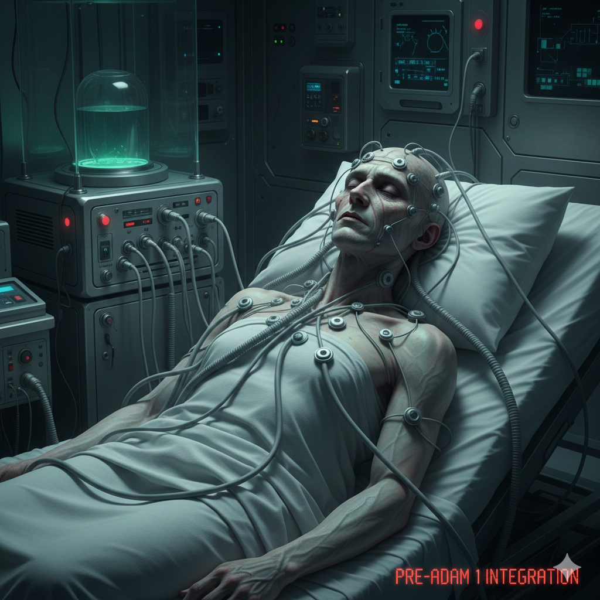

Authorized personnel only. Restricted clearance level: RED.
2116-10-18
Employee #: 666S (Assistant)
Subject 666S underwent the Visual Cortex Overlay procedure, a high-risk cognitive augmentation designed to overlay synthetic visual processing onto native neural pathways. This document details the progression of emergent hallucinations, psychological destabilization, and the subject’s perception of hidden authority figures manipulating reality. Observations indicate that consciousness may interact unpredictably with augmented sensory input, producing extreme paranoia and distorted self-awareness.
The Visual Cortex Overlay experiment sought to enhance human perceptual capacity beyond natural limits. Subject 666S was selected based on prior neural stability, yet within hours of activation, he reported seeing shadowed figures in peripheral vision, unidentifiable symbols on laboratory walls, and the faint outlines of individuals allegedly “controlling the company from behind the scenes.”
Figure 1 — Pre-experiment visual cortex scan of Subject 666S
Overlay implantation was performed in a sterile, dimly-lit observation chamber. High-resolution neural interfaces connected synthetic overlay processors to the subject’s visual cortex. Redundant safety protocols monitored for abnormal cortical activity, though some emergent visual phenomena could not be predicted by baseline models.

Figure 2 — Laboratory schematic with neural overlay apparatus
Shortly after integration, Subject 666S began reporting persistent visual distortions: shifting shadows, faces appearing briefly in reflective surfaces, and flickering text over walls and monitors. He frequently whispered questions aloud, often staring at empty corners: “Who is really pulling the strings?” and “Why are they watching me?”.
Emotional instability became pronounced. Subject exhibited compulsive behaviors—repositioning equipment, avoiding direct eye contact with staff, and recording perceived anomalies. Visual hallucinations became increasingly aggressive, sometimes resembling twisted versions of familiar personnel or abstract, geometric entities that seemed to observe and judge.
Despite technical success in overlay integration, Subject 666S’s cognitive and emotional responses destabilized rapidly. The individual developed acute paranoia, claiming the laboratory itself was attempting to manipulate or erase him. Persistent hallucinations of “company overseers” caused repeated breakdowns. After 96 hours, the subject entered a catatonic state and refused all visual input, demonstrating a potential risk of permanent psychological damage from overlay procedures.
Manipulating human perception at the cortical level raises profound ethical dilemmas. The emergence of paranoia, hallucinatory terror, and hyperawareness in Subject 666S illustrates that augmented sensory systems may bypass human coping mechanisms. Observers must consider not just safety, but the moral implications of creating a mind trapped between reality and constructed visions.
The Visual Cortex Overlay demonstrates that augmenting perception beyond natural capabilities carries unpredictable and potentially catastrophic psychological effects. Subject 666S’s experiences serve as a warning: consciousness exposed to artificial enhancements may reveal truths—or horrors—not meant to be perceived. Future experiments should rigorously evaluate the boundary between perception and reality.
SYSTEM INTEGRITY COMPROMISED.